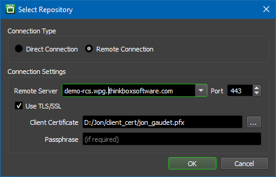
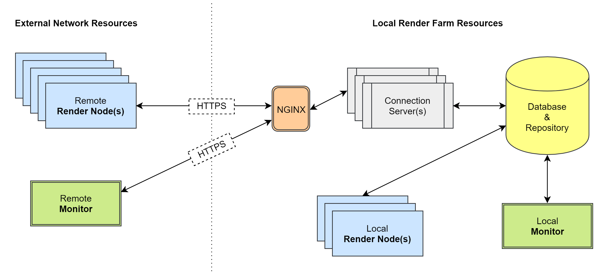

Remote Connection Server¶
Overview¶
The Remote Connection Server is an server application that controls access to the Deadline Database and Repository from Deadline Clients such as the Worker and Monitor. This application replaced the Deadline Proxy Server.
Note
The Deadline Proxy Server was fully removed in version 10.0.25. There are potential issues with the Proxy Server if automatically downgrading to an older version. Please see the Upgrading or Downgrading Non-Render Nodes and Non-Workstations First documentation for more info.

The above diagram is what a simple configuration may look like. The dotted line represents the separation of networks over the internet. In this configuration, the external resources communicate with the Connection Server over HTTP. It is important to note that this means the communication between external resources and the local render farm is not secure. It is also important to note that the diagram has local render farm resources (Worker and Monitor) directly connected to the Deadline Database and Repository. This direct connection is also not secure. See here for more information.
In some cases, such as when using a VPN (virtual private network), this is acceptable. In this case the VPN would ensure the communication is secure. If using a VPN is not desirable, Transport-Layer Security (TLS/SSL) is also an option, though this requires a little more setup to accomplish. See HTTPS Configuration.
Note
In Deadline 10.0.21 and later, client applications (Pulse, Worker, etc.) that are connected to the Remote Connection Server will not be able to perform house cleaning operations. Instead, the Remote Connection Server has adopted this responsibility and will perform House Cleaning, Repository Repair, and Pending Job Scan periodically.
Client applications that use a direct Repository connection can still perform house cleaning operations as normal.
When running several applications in Direct connection mode it might be necessary to prevent some of them from running house cleaning tasks. This could be done by setting the following environment variables to true:
DCONFIG_DISABLEHOUSECLEANING
DCONFIG_DISABLEREPOSITORYJOBSSCAN
DCONFIG_DISABLEREPOSITORYREPAIR
The same effect could be achieved with configuration file settings: House Cleaning Override Settings.
Running the Remote Connection Server¶
To start the Remote Connection Server:
On Windows, you can start the Remote Connection Server by double clicking on
deadlinercs.exein the Deadline client installation folder, usually underC:\Program Files\Thinkbox\Deadline[VERSION]\bin
On Linux, you can start the Remote Connection Server from a terminal window by running the
deadlinercsscript in the bin folder, usually under/opt/Thinkbox/Deadline[VERSION]/bin
On macOS, you can start the Remote Connection Server from a terminal by running the
DeadlineRCSapplication in/Applications/Thinkbox/Deadline[VERSION]/DeadlineRCS[VERSION].app/Contents/MacOS
where [VERSION] is the MAJOR release number of Deadline, such as 10.
Connection Servers Panel¶
Remote Connection Servers can be monitored through the Deadline Monitor with the “Connection Servers” panel. You can use this panel to check the state of Connection Servers and monitor their CPU and memory usage. Note that the Deadline Proxy Server is still considered a Connection Server, and instances of it will appear in this panel. These instances can be differentiated by a Connection Type column with the value Legacy.

Configuration¶
Repository Configuration¶
By default, the Remote Connection Server listens for HTTP requests on port 8080. This can be configured in the Repository from the Deadline Monitor’s Connection Servers panel by right-clicking an item and selecting Modify Connection Server Properties.
The configurable options include:
Host Name/IP Address Override: Overrides the hostname/IP address used to communicate with the Connection Server. By default, this property is blank (no override).
Listening Port: This is port that the Connection Server will listen on when started. By default, this property is
8080.
Command Line Parameters¶
You can also control the Connection Server’s behavior more granularly at runtime with command line parameters. Below is a table of available command-line parameters, they are all specified as follows:
deadlinercs --<param name> <param value>
Available parameters can be queried via deadlinercs –help, but are also provided here for convenience:
Param Name |
Param Value |
|---|---|
ip |
The IP of the interface on which the Server will accept incoming connections. Defaults to 0.0.0.0. |
port |
The Port on which the Server will accept incoming HTTP Connections. Defaults to 8080. |
tls_cacert |
The path to a .crt file containing an additional trusted root certificate to use when authenticating clients. Not specified by default. |
tls_cert |
The path to a .pfx file containing an x509 certificate and key used for authentication and encryption during TLS communication. Required to serve HTTPS connections. Not specified by default. |
tls_port |
The Port on which the Server will accept incoming TLS (HTTPS) Connections. Defaults to 4433. |
Similarly, there are a couple command line flags (which do not require a value) that help provide additional control over the Connection Server’s behavior. The syntax for these is like the parameters above, but does not require a value, e.g.:
deadlinercs --<flag name>
Flag Name |
Flag Behavior |
|---|---|
about |
If specified, the about message will be shown. Defaults to False. |
allowquickedit |
If this flag is specified, Quick-Edit mode will not be disabled on the current console. |
console |
Specify this flag to attach a console window to the main process. |
help |
If specified, the command line usage will be shown. Defaults to False. |
incognito |
If specified, it will prevent the Remote Connection Server from saving its settings to the repository. Defaults to False. |
local_only |
If specified, the Server will only accept incoming requests originating from the local machine (i.e., 127.0.0.1). 403 errors will be returned for requests coming from any other source. Defaults to False. |
log-api-caches |
If specified, it will enable periodic logging of API caches. Defaults to False. |
log-api-calls |
If specified, it will enable detailed logging of API requests. Defaults to False. |
no-log-api-caches |
If specified, it will disable periodic logging of API caches. Defaults to False. |
no-log-api-calls |
If specified, it will disable detailed logging of API requests. Defaults to False. |
tls_auth |
If specified, the Server requires Clients to authenticate themselves by presenting an x509 certificate. Otherwise, client certificates will not be required (but still will be validated if presented). Defaults to False. |
verbose |
If specified, it will enable verbose logging. Defaults to False. |
version |
If specified, the current version information will be shown. Defaults to False. |
Note that the Connection Server will prioritize parameter values specified in the command line over both the default settings set in the Repository Options (see section above), and in the Local Configuration (see below).
Local Configuration¶
The values for all the command line parameters described above can also be permanently configured in the Client Configuration ini file, so that they don’t have to be explicitly specified every time the connection server is started. Note that the parameter names in the *.ini file are different (see Client Configuration docs for the list), but the expected values and behavior remain the same.
For ease of configuration, these values can also be changed via Deadline Command. For more details, you can invoke:
deadlinecommand help ConfigureConnectionServer
Finally, the Deadline Launcher can be configured to automatically re-start the Connection Server in the event of a crash/shutdown via the Client Configuration ini file.
Connecting to the Remote Connection Server¶
The “Change Repository” dialog includes a Connection Type option. To connect to a Remote Connection Server, choose Remote Connection.
Selecting this option allows you to enter the Remote Server address and port. The address should be a hostname or IP address that the machine running the Remote Connection Server is accessible with. The port should be the port that the Remote Connection Server is configured to listen on. If connecting with HTTPS, you can place the path to the PFX certificate in the “Client Certificate” text box, and supply the passphrase if required. See our SSL Certificate Generation documentation on how to create the certificates for your chosen web server.
See also Firewall and Security Considerations to ensure you allow the Remote Connection Server to be accessible through your firewall.
Windows Namespace Reservation¶
If the Remote Connection Server is running on Windows, you may also need to add a namespace reservation for the current user that the Remote Connection Server is running under, so that it can reserve namespaces for the URL connection. See the Configuring Namespace Reservations section in this MSDN Article for more information. Note, Windows XP users require SP2 to be installed and XP 64bit does NOT support namespace reservation. It is recommended to use a server based Windows OS such as Windows 2003, 2008 R2, 2012 or newer.
Note that by default, the Remote Connection Server listens on http://+:8080/, so make sure you set the port number correctly in the URL you use when reserving the namespace. For example:
netsh http add urlacl url=http://+:8080/ user=DOMAIN\username
Ensure you have correctly elevated Windows permissions when executing the above in a command prompt and replace username with the appropriate %USERNAME% that the Remote Connection Server is running under. For machines not on a domain, simply remove the DOMAIN prefix, but keep the backslash. Depending on your local security policy, the user account may need to have local administrator rights temporarily for you to initially reserve the namespace. The namespace reservation will also need updating if you ever modify the port number or user account used. Use the following command in a command prompt to help list what namespace reservations are currently present on your machine:
netsh http show urlacl
Note that this is NOT the same reservation that is required for the Web Service.
Linux Open File Limits¶
If the Remote Connection Server is running on Linux, it is recommended that you increase the maximum number of open files for the Remote Connection Server process. Since socket connections are treated as open files on Linux it is very easy for the default maximum value (1024) to be reached in an active farm. We recommend setting it to at least 200000. You can set by running the following command before running the Remote Connection Server:
ulimit -n 200000
The Remote Connection Server will check the file limit on startup and print a warning to the beginning of the log if it is set to a value that is too low, but will run anyway.
HTTPS Configuration¶
The Remote Connection Server can be configured to use TLS to encrypt communications and authenticate incoming client connections, if needed. To do so, you will need to configure the following settings for your Connection Server:
‘TLS Certificate’ must be specified, and be a valid PKCS#12 file containing a certificate and corresponding private key.
‘TLS Port’ must be specified to be a bindable Port that is not already in use by another application.
‘TLS Auth’ should be specified to require clients connecting to the server to authenticate themselves by presenting a client x509 certificate.
‘CA Cert’ can optionally be specified to provide an additional trusted Root CA to use when building a trust chain from incoming clients’ certificates.
Note that when configured to serve HTTPS connections, trying to connect to the HTTP Port directly (8080 by default) from an external machine will result in a 403 error being returned to the Client. When a Deadline client application connects to a Connection Server through HTTPS, you must enter the path a TLS/SSL client certificate in the “Client Certificate” field. It is strongly recommended that you keep this certificate (which must be accompanied with the key in a PKCS#12 file) protected by a password.
Warning
If your Deadline Repository has Secrets Management Enabled, you MUST have TLS (HTTPS) enabled on your Remote Connection Server.
To create SSL certificates, see the SSL Certificate Generation documentation. Alternatively, you can also re-run the Deadline Client Installer and select the option to configure the connection server. You will then be presented with an option to generate new certificates for use by the Connection Server.
In addition to configuring the Connection Server to handle HTTPS connections itself, you can also set up a third-party Web Server to handle the TLS termination as well – this might be desirable if you are looking to maximize performance, or are also in need of Load Balancing (see section below for details). In either case, if you are looking to have a third-party server handle TLS termination, the Connection Server itself would not need any of the above TLS configuration, and should NOT be exposed externally to the internet. It is also recommended in this case to use the Network Allow List feature to restrict incoming connections to only the machine hosting the TLS termination, ensuring that only connections coming through that server are allowed.
Load Balancing¶
Load balancing can be achieved by using a web service such as NGINX.
In this configuration, we’ve introduced a couple new components. There is now an intermediary NGINX component that accepts HTTPS connections from external resources. The NGINX component can also be used to load balance between one or more connection servers. See the NGINX documentation for help setting this up.
Configuring Network Compression Feature in Remote Connection Server¶
The network compression feature compresses RCS messages increasing performance and reducing network bandwidth. This feature is on by default. To disable this feature:
Open
deadline.ini. On Linux, this file is typically:/var/lib/Thinkbox/Deadline[VERSION]/deadline.ini.Add the property:
NetworkCompressionEnabledServer=Falseand then save the file.Restart the Deadline RCS.
By default, network compression is done using the Brotli compression algorithm. This algorithm provides good overall performance. To switch to the alternate GZip compression algorithm:
Open
deadline.ini. On Linux, this file is typically:/var/lib/Thinkbox/Deadline[VERSION]/deadline.ini.Add the property:
NetworkCompressionProvider=gzipand then save the file.Restart the Deadline RCS.
FAQ¶
Does the Remote Connection Server use any license?
No. It is an unlicensed product and included in the Deadline Client software installer.
Can I run the Remote Connection Server on any machine in my farm?
You can run Remote Connection Server on any machine in your farm, including the Repository or Database machine. However, for larger farms, we recommend running the Remote Connection Server on a dedicated machine.
When choosing a machine to run the Remote Connection Server on, you should be aware that non-Server editions of Windows have a TCP/IP connection limitation of 10 new connections per second. If your render farm consists of more than 100 machines, it is very likely that you’ll hit this limitation every now and then (and the odds continue to increase as the number of machines increase). Therefore, if you are running Remote Connection Server on a farm with 100 machines or more, we recommend using a Server edition of Windows, or a different operating system like Linux.
Can I run the Remote Connection Server as a service or daemon?
Yes. If you’re running the Launcher as a service or daemon, then it will run Remote Connection Server in the background as well. See the Client Installation documentation for more information.
Is the Remote Connection Server used for usage-based licensing or 3rd party licensing?
No. This is handled by the Cloud License Server Proxy and License Forwarder application respectively.

{kind=link}